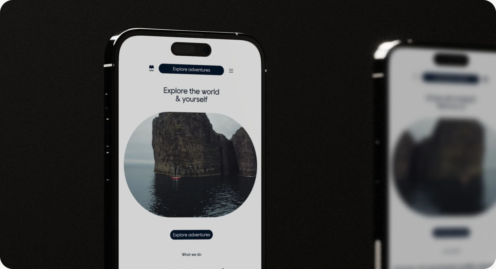
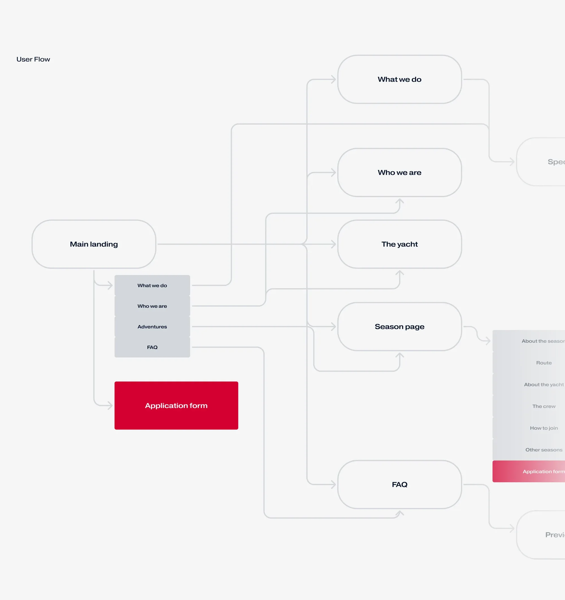
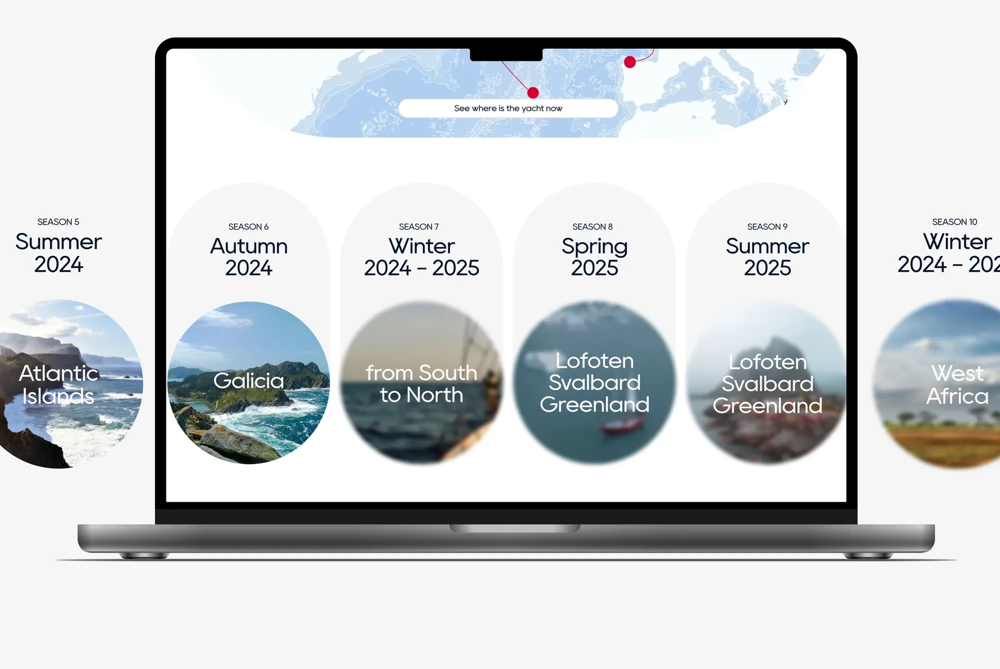
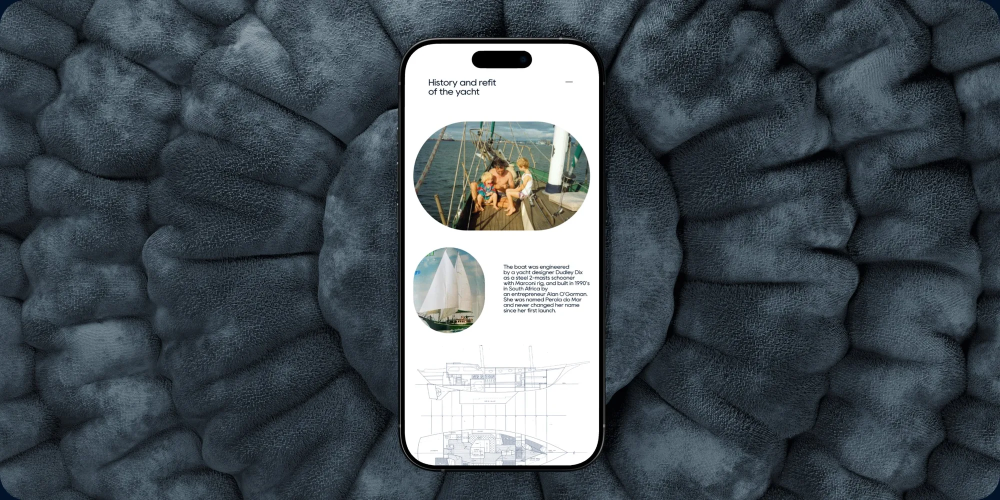
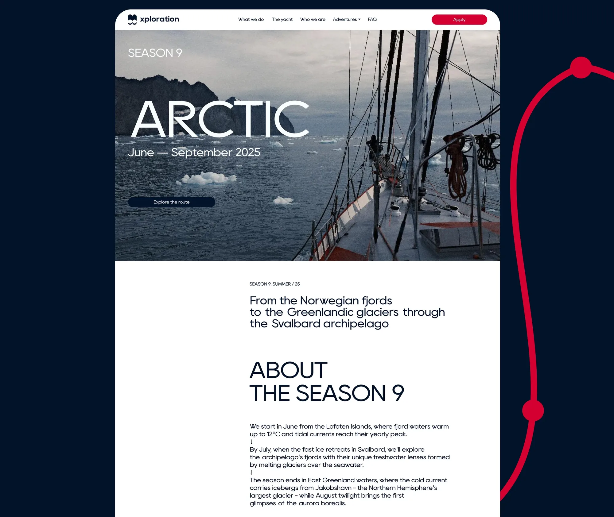
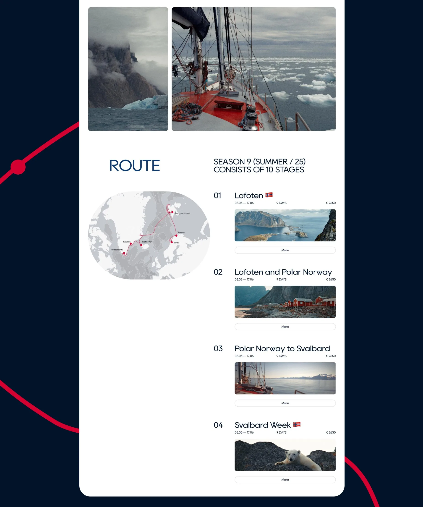
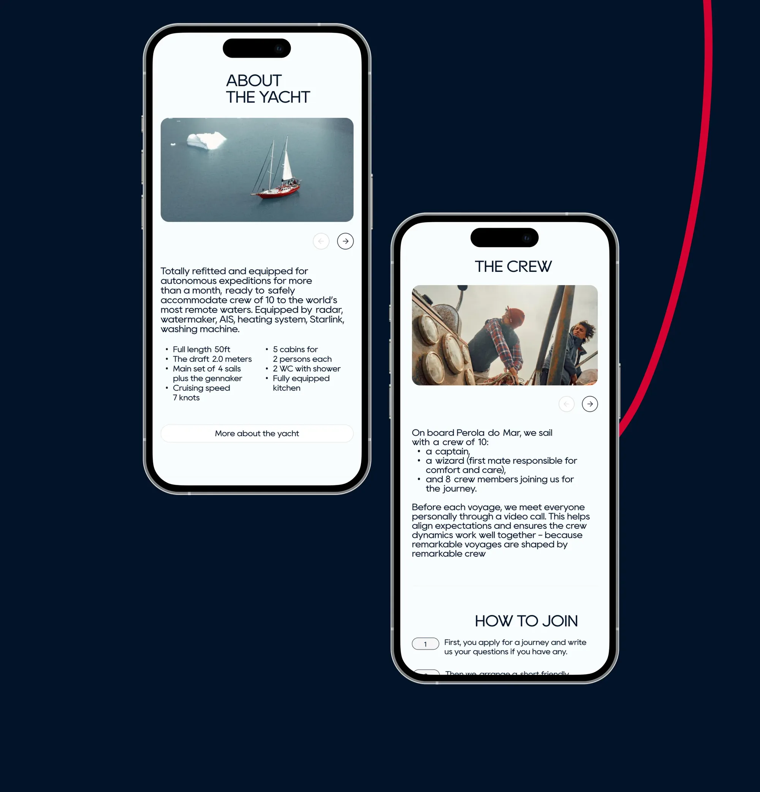
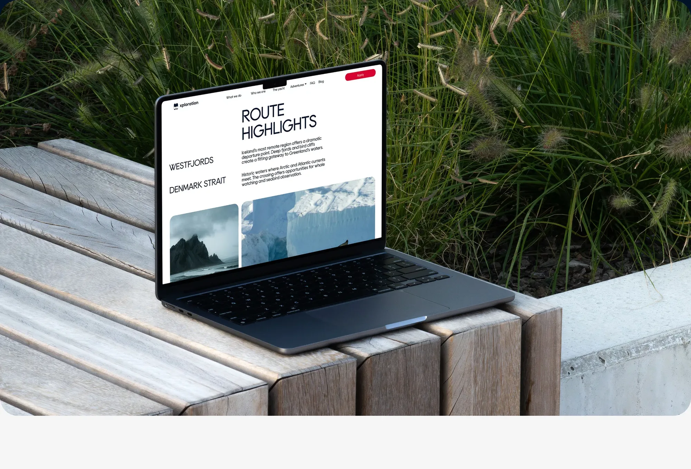
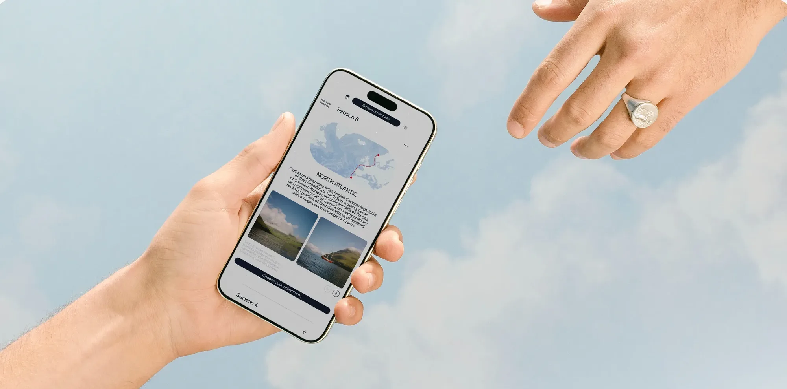

XPLORATION
Дизайн сайта испанского яхт-клуба, который организует долгие камерные поездки по европейскому и африканскому побережью. Я обновила визуальный стиль, привела сайт и коммуникации к единому образу и переработала навигацию и структуру.

О проекте
Клуб, где путешествие — это исследование
XPLORATION — испанский яхт-клуб. Он собирает небольшие экипажи на долгие камерные походы: у каждого сезона свой маршрут, свой настрой и свои этапы, на которые можно записаться отдельно.
Прежнее оформление не отражало характер клуба и терялось среди конкурентов, а сайт и соцсети жили каждый своей жизнью.
Три задачи
- Обновить визуальный стиль — прежнее оформление не отражало характер клуба и терялось среди конкурентов
- Привести сайт и коммуникации к единому образу — чтобы укрепить узнаваемость бренда
- Обеспечить комфортный пользовательский опыт — переработать навигацию и структуру для лёгкости и вовлечения
Как шла работа
- Исследование и поиски. Разбираю, чем клуб отличается от конкурентов, и ищу визуальный язык, в котором это читается без подписей.
- Страницы сезонов. Самый объёмный и важный шаблон: у каждого сезона свой маршрут, этапы, яхта и команда, а структура должна быть одинаковой, чтобы сезоны можно было сравнивать.
- Оформление соцсетей. Переношу тот же образ в коммуникации, чтобы сайт и соцсети работали как одна система, а не как разные площадки.
- Контентные страницы. Условия путешествий, атмосфера на борту и техническое состояние яхты — материал, который снимает у человека сомнения перед заявкой.
Структура и навигация
Прежде чем рисовать экраны, я собрала карту переходов и выстроила иерархию контента. С главной человек попадает в разделы «Что мы делаем», «Кто мы», «Яхта» и на страницы сезонов, а форма заявки доступна и с главной, и со страницы сезона.
Внутри сезона порядок блоков повторяет вопросы, которые задаёт себе человек, решая, ехать ли: о чём этот сезон, какой маршрут, на чём мы пойдём, с кем, как присоединиться и какие есть другие сезоны. Каждый ответ стоит на своём месте и не заставляет возвращаться назад.

Принципы, на которых держится сайт
- Одна главная цель на экран. Кнопка заявки всегда под рукой в шапке, остальные элементы её не перебивают
- Постепенное раскрытие информации. Этапы маршрута показаны карточками с датой, длительностью и ценой, а подробности спрятаны за кнопкой «More» — страница остаётся обозримой
- Единый шаблон для всех сезонов. Структура одинаковая, меняется только контент — так сезоны легко сравнивать, а новые добавлять проще
- Карта рядом с этапами. Маршрут читается и текстом, и графикой: человек сразу видит, куда и как далеко идти
- Ритм вместо сплошной ленты. Крупные заголовки, фото, короткие блоки и воздух чередуются, поэтому длинная страница не утомляет
- Мобильная версия — не уменьшенная копия. Блоки «Яхта» и «Команда» на телефоне превращаются в карусели, а шаги «Как присоединиться» нумерованы
Главная страница
Главная через плавный ритм и образы задаёт тон проекту: это исследование мира и себя, а не туристическое приключение. Дизайн фокусируется на лёгкости восприятия и передаче настроения клуба.
Страницы сезонов
Каждый сезон — это приключение с уникальным настроением. Чтобы передать дух исследования, я использую ключевой графический приём — лёгкое размытие, напоминающее эффект приближения в подзорную трубу.
Структура и ритм контента на сезонных страницах продуманы так, чтобы даже при большом объёме информации пользователь не уставал при скролле — за счёт смены темпа, визуальных разгрузок и акцентов.




Доверие и атмосфера
Помимо удобства взаимодействия, важно было выстроить эмоциональный контакт с пользователем: вызвать доверие к яхте и команде, а также передать атмосферу жизни на борту.

Контентные страницы
Помимо сезонных направлений, нужно было разработать серию контентных страниц — для подробного рассказа об условиях путешествий, атмосфере на борту и техническом состоянии яхты. Эти разделы помогают создать полное и доверительное представление о проекте.

Итог
Я спроектировала более 20 страниц. Вот как результат ложится на три исходные задачи.
- Визуальный стиль обновлён. Сайт получил узнаваемый образ с лёгкими воздушными экранами и фирменным приёмом размытия «подзорной трубы», который выделяет клуб среди конкурентов
- Сайт и коммуникации говорят одним языком. Единый образ перенесён в оформление соцсетей, поэтому бренд узнаётся на любой площадке
- Опыт стал комфортным. Переработанные навигация и структура ведут от главной к сезону и заявке без лишних переходов, а ритм страниц сохраняет вовлечённость на всём пути пользователя

следующий проект
MyOlimp: дизайн-система